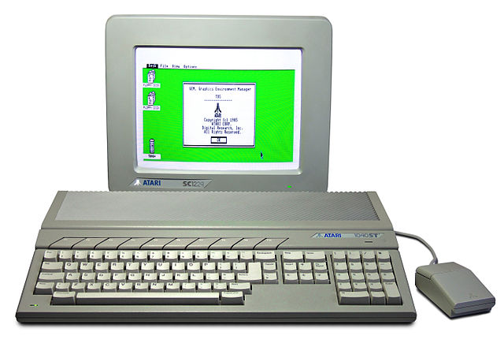

First encounter with the world of computers
It was at school, in classes called 'information science'. It was ATARI with 64Kb of RAM and a Russian display with a huge dot. All we could do was programming on BASIC.
But this totally turned my world upside down! This technology evidently promised way more than it could render at that moment.
Surprisingly, I was the only one in class who got excited then - other students were dead bored.
I got my personal computer later, in around 1996, and it was also ATARI with build-in TOS and emulated DOS, without HDD - FDD 3.5" only, and a monochrome display.
Then it was a 286, then 486DX4-100, and so on...